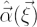
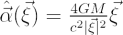
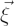
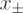
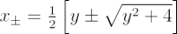
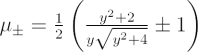
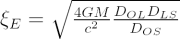

The Schwarzschild lens model is the simplest gravitational lens model. It treats the lensing object as a point mass in the lens plane, and always produces two images (although one image may be highly demagnified).
For the Schwarzschild lens, the deflection angle,

, is:
where M is the lens mass,

is the impact parameter in the lens plane, G is the gravitational constant and c is the speed of light. The closer a light ray passes to the lens, the greater the deflection.If we use the dimensionless gravitational lens equation:
y = x – α(x)
relating positions in the source plane, y and lens plane x, the deflection angle for the Schwarzschild lens reduces to:
α(x) = 1/x
This equation can be inverted to give a simple quadratic equation, and hence

(the two image locations) as a function of y. We now have enough information to determine:- The location of the source, if we know the location of one or both of the images, using y = x – 1/x; and
- The location of both images, if we know the location of the source, using

. The corresponding gravitational magnifications of the two images are
.
For a point source which is directly in line with the observer and a Schwarzschild lens, the image will be a ring with radius:

called the Einstein ring or Einstein radius. The distances, Dij, are angular diameter distances between the [O]bserver, [L]ens and [S]ource planes.